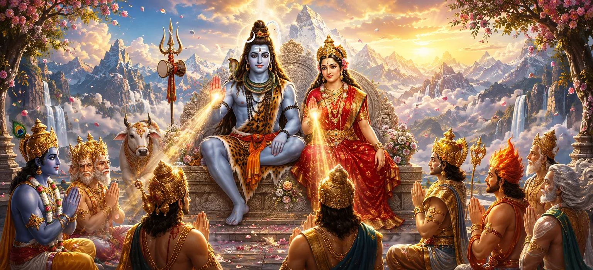

Having witnessed the sacred marriage and eternal union of Lord Shiva and Goddess Pārvatī, the gods approached the divine couple with reverence and gratitude. Their long period of uncertainty was nearing its end, for the union of Shiva and Shakti had restored cosmic balance and prepared the way for the fulfilment of their divine purpose. Pleased by their devotion, Shiva and Pārvatī bestowed blessings of protection, strength, wisdom, prosperity, and renewed hope upon the assembled gods.
Brahmā, Viṣṇu, Indra, the guardians of the directions, celestial sages, and other divine beings assembled at Kailāsa. With folded hands and humbled hearts, they bowed before Shiva and Pārvatī and praised them as the eternal father and mother of creation.
The gods expressed gratitude for the compassion through which Shiva had accepted Pārvatī and entered sacred household life. They understood that this divine marriage had taken place not only for personal happiness but also for the protection of righteousness and the welfare of all beings.
Lord Shiva spoke reassuringly to the gods and asked them to abandon fear. He declared that righteousness would be protected and that the suffering caused by powerful forces of evil would not continue forever. Every divine purpose would be fulfilled at its proper time.
Goddess Pārvatī looked upon the assembled beings with motherly compassion. She blessed them with courage, unity, prosperity, and freedom from unnecessary fear. Her presence filled their hearts with confidence and spiritual strength.
The gods had suffered greatly under the oppression of Tārakāsura, who could be defeated only by a son born of Shiva. The divine couple assured them that the purpose behind their union would bear fruit and that the power necessary to restore peace would manifest.
The Divine protects those who uphold righteousness and seek refuge with sincere devotion.
Shiva and Pārvatī grant courage and strength to those facing difficult responsibilities.
Divine purposes unfold according to wisdom and reach fulfilment at the appropriate moment.
Lord Shiva blessed the gods so that they could perform their cosmic responsibilities without pride or negligence. He reminded them that divine authority must always be used to preserve balance, protect the innocent, and serve the welfare of creation.
Pārvatī blessed them with compassion so that strength would never become cruelty and authority would never become oppression. Together, Shiva and Shakti revealed that true power must remain united with wisdom, restraint, and kindness.
Divine blessings do not remove every responsibility or challenge. They provide the courage, clarity, and inner strength needed to fulfil our duties with righteousness. Like the gods, we must use every blessing not for pride or selfish gain but for service and the welfare of others.
After receiving the assurances and blessings of the divine couple, the fear within the hearts of the gods disappeared. They understood that although difficulties might remain for some time, the power of unrighteousness could never defeat the eternal order protected by Shiva and Shakti.
Renewed hope gave them the strength to return to their duties. They resolved to remain united, act with wisdom, and patiently await the fulfilment of the divine promise.
The gods bowed repeatedly before Lord Shiva and Goddess Pārvatī. They offered sacred hymns, flowers, and heartfelt gratitude before requesting permission to return to their respective celestial regions.
With the permission of the divine couple, they departed from Kailāsa while chanting the names of Shiva and Pārvatī. Their hearts were peaceful, their courage had been restored, and their faith in the ultimate victory of dharma had become unshakable.
“Divine blessings give us not an escape from duty, but the wisdom, courage, and compassion to fulfil it righteously.”
Lord Shiva and Goddess Pārvatī blessed the assembled gods with protection, strength, wisdom, unity, and renewed hope. Assured that righteousness would prevail and their divine purpose would be fulfilled, the gods returned peacefully to their celestial abodes. Proceed to the final chapter to witness the sacred completion of Parvati Khanda and reflect upon its enduring spiritual message.